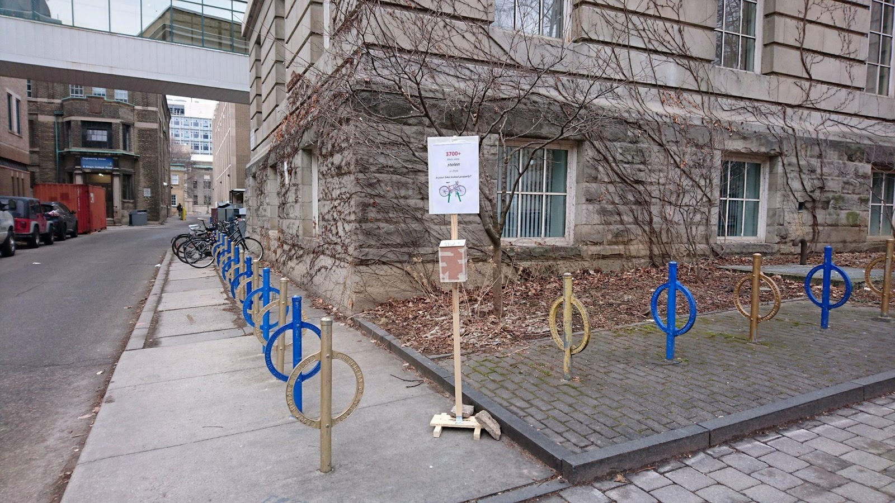

Improving Bike Theft Awareness on Campus
Institute for Leadership Education in Engineering (iLead), The Game Program, University of Toronto

During my second year (2017-2018), I participated in iLead's The Game program, a platform where teams use the engineering approach to resolve social issues.
My team worked on the issue of bike theft in Toronto, by aiming to reduce the number of bike thefts. At first, we made several surveys in cycling focus groups to find out the root causes. These included the lack of police enforecement, lack of general awareness, and not enough technology to track bikes. We initially designed a mobile app and tag system, only to find out that a reference design (Project 529) is being planned to be implemented in Toronto by an organization called Cycle Toronto, after meeting with their representatives.
As a result, my team narrowed down on increasing awareness on bike theft, which led to the manufacturing of a sign and poster box stand for displaying our poster, as well as information cards to inform cyclists about secure bike-locking methods. This system was put on trial on campus and had some success. If continued, we could partner with Cycle Toronto and develop a larger awareness campaign.
My team's final presentation can be seen here.
Links
Institute for Leadership Education in Engineering (iLead)
Copyright 2018 © Bill Yuan Hong Sun